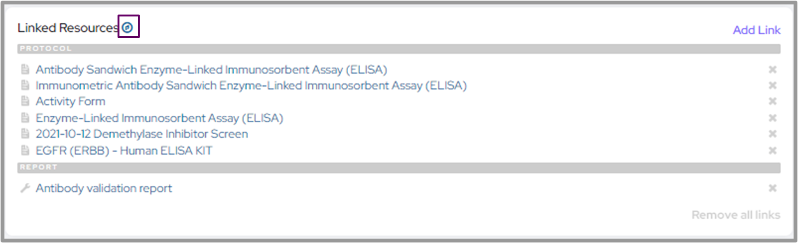

Using Collections
Most of your interaction with LabGuru will probably be adding and editing items in the various LIMS collections. All of
our current sample collections are represented in this module as a subclass of Collections. Collections
is itself a subclass of LabGuruItem, which provides helpful functions that Collections has in common with ELN and
storage classes.
Current Collections:
Category |
Collections |
|---|---|
DNA |
|
Bacterial |
|
Purification |
|
Reagents |
|
Selections |
|
in vivo |
For the rest of this page, we will (mostly) use Plasmid in our examples to make things more
concrete, but Plasmid in the code below can be replaced with any of the classes
above. Just make sure to look at their attributes, as Plasmid attributes won’t
always correspond to the other collections.
Getting an item from LabGuru
Most of the time, you will be retrieving collection items from LabGuru by the item’s name or id number. The
from_name() and from_id() methods are
the best way to do that.
- classmethod LabGuruItem.from_name(name: str) LGI[source]
Retrieves a
LabGuruItemfrom the API via its name.Examples
Get plasmid
pGRO-S0081:p = Plasmid.from_name('pGRO-S0081')
- Parameters:
name – The exact name of the desired item
- Returns:
The requested
LabGuruItem
- classmethod LabGuruItem.from_id(item_id: int | str) LGI[source]
Retrieves a
LabGuruItemfrom the API via its ID number.Examples
Get plasmid
pGRO-S0081:p = Plasmid.from_id(294)
- Parameters:
item_id – The database id of the desired item
- Returns:
The requested
LabGuruItem
Collection classes provide a few other ways of getting specific items from the API. These are combined into a single method:
from_LG(). from_name() and
from_id() are actually just calls to this function.
- classmethod LabGuruItem.from_LG(item_id: int | None = None, name: str | None = None, uuid: str | None = None, api_url: str | None = None, auto_name: str | None = None, include_custom=False, from_cache=True, proxy=True) LGI[source]
Retrieves a
LabGuruItemfrom the API. Only 1 of the following parameters will be queried, in the following order: item_id, name, uuid, auto_name.Note: This should only be used if
LabGuruItem.from_nameorLabGuruItem.from_idis insufficient.- Parameters:
item_id – The database id of the desired item
name – The name of the desired item
uuid – The uuid of the desired item
api_url – The API URL of the desired item
auto_name – The SysID of the desired item
include_custom – If true, include the ~200 “custom###” fields returned by the api. Default: False
from_cache – If false, forces an API call even if the object is cached. Default: True
proxy – If true, returns a proxy object with lazy API calls. Default: True
- Returns:
The requested
LabGuruItem
Searching for Items
Collection attributes (and most properties) utilize the SearchInterface protocol.
The protocol overrides the standard comparison operators (=, !=, >, >=, <, <=) and adds a few
extra comparison functions
(contains(),
not_contains(),
starts_with(),
ends_with(),
is_null(),
is_not_null()).
These can be used in conjunction with find_one() and
find_all() to search the LabGuru database for items matching your criteria.
In addition, the asc() and desc()
methods allow you to sort the results.
Let’s look at some examples:
Finding all pGRO plasmids that were generated as part of experiment 818:
results = Plasmid.find_all(Plasmid.name.starts_with('pGRO'), Plasmid.clone_no.contains('-0818-'))Finding all strains that express Uox25 variants:
results = Strain.find_all(Strain.genotype.contains('uox25'))Finding all plasmids that can express Uox16 with at least 3 NSAA codons:
results = Plasmid.find_all(Plasmid.genotype.contains('uox16'), Plasmid.u_count >= 3)Find the largest biomass pellet from GRO20-1895 that was grown in TB:
s = Strain.from_name('GRO20-1895') result = BiomassPellet.find_one( BiomassPellet.parent_strain == s, BiomassPellet.media_type.contains('TB'), BiomassPellet.pellet_weight.desc() )
Note
You can provide find_one() and find_all()
with as many filters as you like, but only the first 2 can be sent to LabGuru (their limit, not ours). The remaining
filters will be applied programmatically before returning the result(s).
If you’ve ever tried filtering a collection table on the LabGuru website with 3 or more criteria and wonder why it isn’t working correctly, this is why.
Adding New Items
There are a few ways that you can create new collection items. We’ll go over them now.
1. New Python Object
The go-to method for object generation in Python works here, too. Just make a new instance and start setting properties.
pla = Plasmid()
pla.name = 'pGRO-C0000'
pla.description = 'Fake GFP 1xU example plasmid'
pla.origin = 'p15A'
pla.resistance = 'cat'
pla.insert = 'GFP_Y123U'
pla.promoter = 'P.T7'
pla.genotype = 'p15A-(P.T7:GFP_Y123U)'
pla.u_count = 1
pla.sequence = some_sequence_object
This will make a new plasmid object, but it will not add it to LIMS yet. You will need to use the lg_sync()
method for that. When using lg_sync() to add a new item, the API’s response will populate the
id attribute, along with any default values.
>>> pla.id
''
>>> pla.lg_sync()
>>> pla.id
'12345'
Attention
Note that the id attribute is a string, not an int. This is because
the web API needs it to be a string at times and an integer at others. Calls to the API return the id as a string,
so that’s what we went with for the attribute class. If you need id to be an
integer in your code, make sure to convert it using int(pla.id).
2. make_new()
Method 1 works just fine, but it’s kinda long. To make this more concise (and loadable via dictionary), we implemented
the make_new() method. It’s a class method that takes all of the function’s
attributes as keyword arguments. So the code above becomes:
pla = Plasmid.make_new(name='pGRO-C0000', description='Fake GFP 1xU example plasmid', origin='p15A',
resistance='cat', insert='GFP_Y123U', promoter='P.T7', genotype='p15A-(P.T7:GFP_Y123U)',
u_count=1, sequence=some_sequence_object)
pla.lg_sync()
3. add_new()
And if 2 lines is still too many, you can use add_new(). This will automatically
sync it with LabGuru and return the synced object.
pla = Plasmid.add_new(name='pGRO-C0000', description='Fake GFP 1xU example plasmid', origin='p15A',
resistance='cat', insert='GFP_Y123U', promoter='P.T7', genotype='p15A-(P.T7:GFP_Y123U)',
u_count=1, sequence=some_sequence_object)
4. make_new_copy()
Sometimes you need to duplicate an object, but as we mentioned in the Introduction, we want each collection item to be
a singleton. So when we make a copy, we don’t want the new item to conflict with/overwrite the original. This is where
make_new_copy() comes in. This method will re-initialzie all of the attributes
used to cache the original object (id, name,
uuid, auto_name,
api_url), but leave all of the other properties intact.
Updating Items
Updating items is easy. Change any property you want and run an lg_sync().
Say we realized that pGRO-C0000 is actually spec resistant:
>>> pla = Plasmid.from_name('pGRO-C0000')
>>> pla
<Plasmid 12345: pGRO-C0000>
>>> pla.name = 'pGRO-S0000'
>>> pla.resistance = 'spec'
>>> pla.lg_sync()
<Plasmid 12345: pGRO-S0000>
Caution
Renaming an item, especially a Plasmid or Strain,
can have impacts on the properties of other items in disparate collections (stock names, genotypes, etc.).
Collections has a special method to handle these instances:
rename. Since it will touch many samples and needs to stay as in
sync as possible, rename will be executed by the API immediately.
So make sure you use rename if that’s the goal, but be careful. A lot
changes and there’s no reverting (other than another rename call…)
Similar to make_new(), the bulk_update()
method can be used to update many attributes via keyword arguments/dictionary unpacking:
>>> pla = Plasmid.from_name('pGRO-C0000')
>>> pla
<Plasmid 12345: pGRO-C0000>
>>> new_props = {'name': 'pGRO-S0000', 'resistance': 'spec'}
>>> pla.bulk_update(**new_props)
>>> pla.lg_sync()
<Plasmid 12345: pGRO-S0000>
Linking Items
Sometimes it is useful to add a bi-directional link between two collection items to help the user navigate between related items on the LabGuru website. The links show up in a sidebar or footer depending on the item.

https://help.labguru.com/en/articles/1492355-networking-your-research-links-tags-and-more
To link an item to another, simply call the link_to() method. Linking will be done
immediately and does not require a call to lg_sync().
pla1 = Plasmid.from_name('Plasmid 1')
pla2 = Plasmid.from_name('Plasmid 2')
pla1.link_to(pla2)
To retrieve linked items, call the get_linked_items() method. The required of_type argument limits the
response to items from a particular collection.
>>> pla1 = Plasmid.from_name('Plasmid 1')
>>> pla1.get_linked_items(Plasmid)
[<Plasmid 00002: Plasmid 2>]
Collections can also be linked via parent-child relationships. An item’s parents are recorded as one of the item’s
attributes (such as the Strain class’s parent_strain and
anchor_strain attributes). An item’s children can be retrieved via the
get_derived_items() method. It also has an of_type argument that determines the type of child that
will be returned.
>>> s = Strain.from_id(2)
>>> s.parent_strain
<Strain 1: Base Strain>
>>> s.get_derived_items(Strain)
[<Strain 3: First Daughter Strain>, <Strain 4: Second Daughter Strain>, ...]
>>> s.anchor_strain
<Anchor Strain 1: MG1655>
>>> s.parent_strain.anchor_strain
<Anchor Strain 1: MG1655>
>>> s.anchor_strain.get_derived_items(Strain)
[<Strain 1: Base Strain>, <Strain 2: Main Strain>, <Strain 3: First Daughter Strain>, ...]
Working with stocks
Collections items are meant to be purely conceptual. They may or may not actually exist. We use Stock
items represent physical instances of Collections items.
To create a stock, we use the add_stock() method.
>>> p = Plasmid.from_id(12345)
>>> plate = Plate.from_name('PLA-0000')
>>> p.add_stock(p.name, plate, well='A1')
<Plasmid Stock 98765: pGRO-S0000>
To find an item’s stocks, use the get_stocks() method.
>>> p = Plasmid.from_id(12345)
>>> p.get_stocks()
[<Plasmid Stock 98765: pGRO-S0000>]